design/2026-09-building · round 4 · C 档案, the dossier · Demos
Demos, round 4: the region and its note as a pair, B tuned, the pen at the region's corners, and play at the centre
Fred's notes on round 3 (r3-demos-board.html), in his words:
The play video button should be more salient, now it's easy to miss if just skimmed through because it's unintuitive, most people will try to find the play button at the center of a video.
I'd choose B for the marker.
The current zoom in factor is too aggressive, and the zoomed-in window spends most on image whereas I think we need a balance of the image itself + the explanation notes.
The hand-sketched circle looks really raw and not elegant; plus when zoomed-in we don't need the circle anymore, it's only needed in the zoomed-out version to direct the attention.
Live: r4-demos.html?h=a, where the pen marks a region's four corners (recommended) · ?h=b, a thin outline · ?h=c, a smooth stroke. The switcher in the page's lower-left corner changes how the pen points at a region; "reduced" previews reduced motion. The marker is always B, tuned. Everything else is round 3's: the enlargement still opens over the capture's frame, from the region's own place, and nothing below it moves.
1 · Play, at the centre of the poster
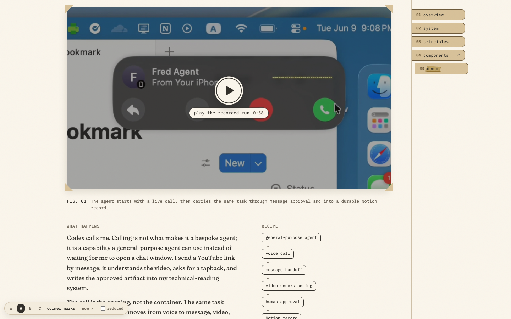
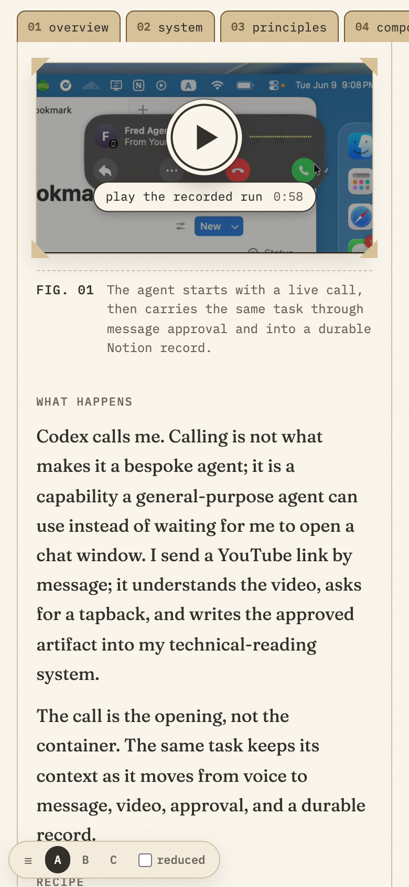
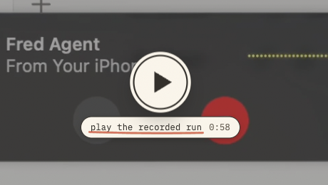
- The control sits where people look for one: a 72 px paper disc (64 px on phones) with a 2.5 px ink ring and an ink triangle, set a little right of centre so it looks centred. It has B's paper halo, hairline and contact shadow, so the play control and the capture markers share one family. The typed label, "play the recorded run 0:58", sits under the disc on a paper slip. It uses the site's paper and ink, not a video player's red.
- A flat ink veil (40 %) holds the poster back until it plays. This poster is a call screen full of round buttons (reply, more, decline, accept), and without the veil the disc read as one more of them. The veil is a flat tint, not a gradient, and it's gone once the video plays.
- The disc, its label, or the poster itself starts playback in place. Nothing downloads before that: the video stays
preload="none". - Motion: under a mouse the disc scales to 1.07 on the site's settle curve (one small overshoot), and it presses to 0.97. Transform only, and nothing moves under reduced motion.
2 · Markers: B, the paper token, tuned
B keeps its character: a paper disc, an ink numeral and an ink ring. Round 3's B nearly disappeared on white UI, because its paper halo is invisible against white. The tuned B changes three things:
- A firmer ink ring: 2.5 px, up from 2.25.
- An ink hairline at 40 % outside the paper halo, so the token keeps an outer edge on white.
- A two-part contact shadow (2 px tight, 14 px soft), so it sits on the capture instead of in it.
On dark UI the paper disc already stood out; the hairline and shadow change nothing there. The legend uses the same token, and an open region takes the wheat band. Below, both versions sit live on the same three patches the round-3 board used.
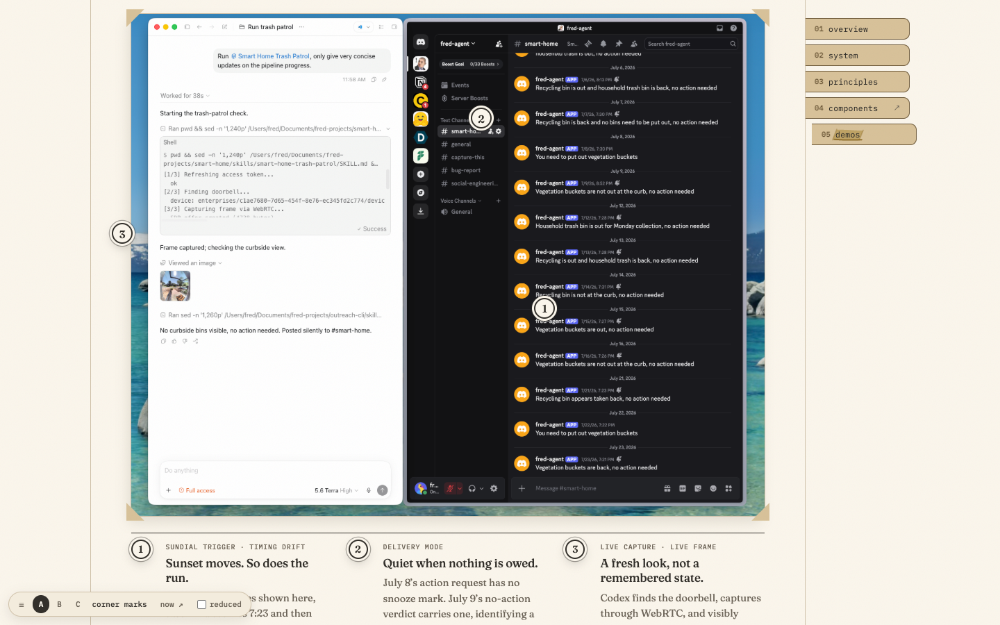
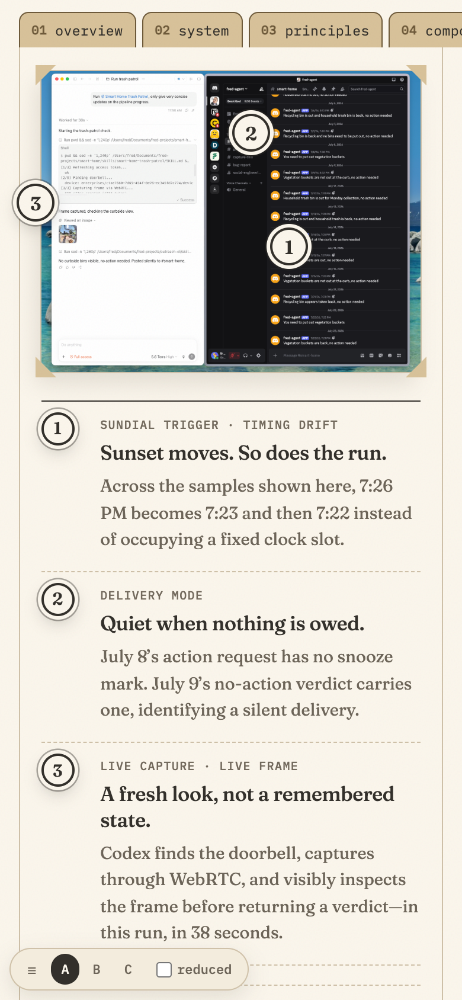
3 · Pointing at a region: the pen at its edge, never across it
Round 3's coral loop was a rough lap that crossed the very text it meant to show. Each option below marks the region's edge and leaves its inside alone. Each draws only while the region is noticed, when a mouse is over its token or its note, or keyboard focus is on the note. There's no coral at rest. The enlargement draws nothing: the region sits in its window with its own token at the corner, and the note beside it says what to look at. Below, each option is live on two real patches. Move the mouse over a patch to redraw its mark.
Four corners 6 px outside the region, drawn one after another, as the site draws its focus 「 」, and lifted the same way
It fades in and out, and nothing is drawn: the cleanest, but it reads as a selection box, a system's mark rather than a hand's
Round 3's loop, calmed: a steady pass that overshoots its start a little. It's still a closed line drawn round the content
Recommended: A, the four corners
- It marks exactly the region's extent and touches nothing inside it, so the text the note points at stays clear. It's also the least ink: four short strokes.
- It's the site's own vocabulary. The pen's 「 」 is how the site marks what's in focus. At a region's size it reads as an editor's crop marks on a print, which is what the dossier is. A pair of corners wasn't enough, because the token sits on the top-left corner and would hide the 「. With four, the token reads as pinned to one of them.
- The trade-off: on a mouse hover it borrows the focus mark's shape, where text would get an underline. For a region of a picture, an underline has nothing to hang from, and with keyboard focus the note's 「 」 and the region's corners read as a pair.
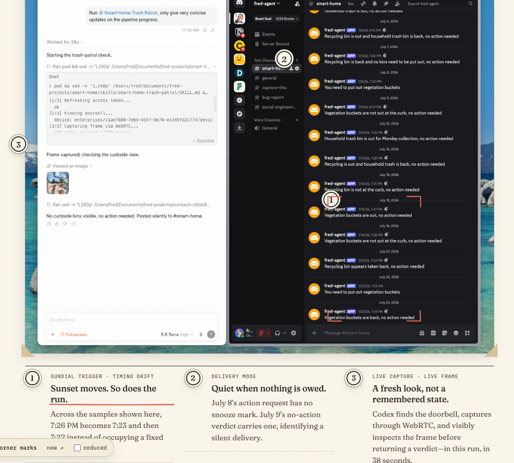
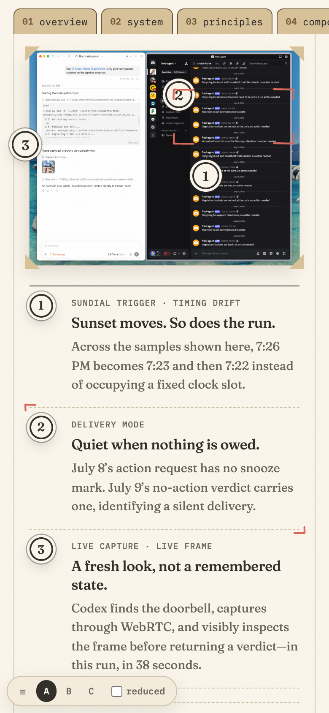
4 · The enlargement: less zoom, and the note given real room
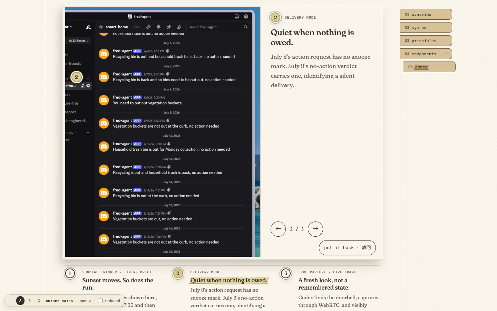
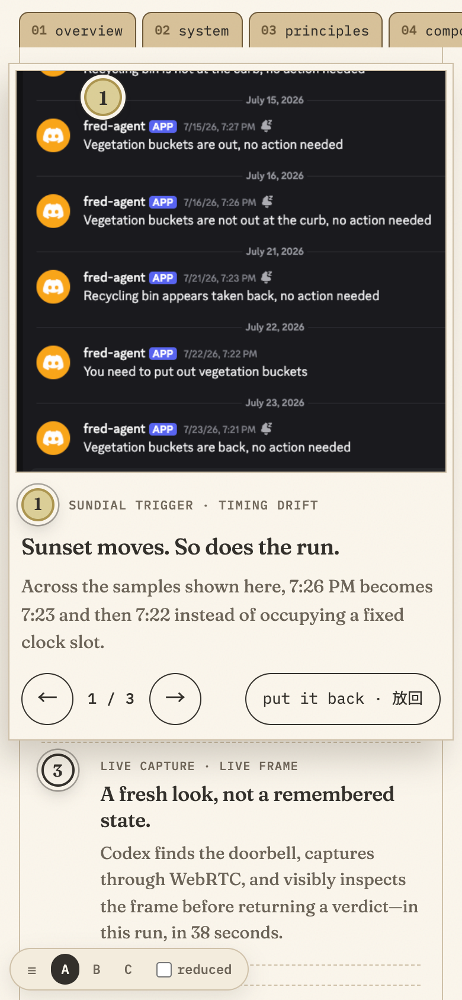
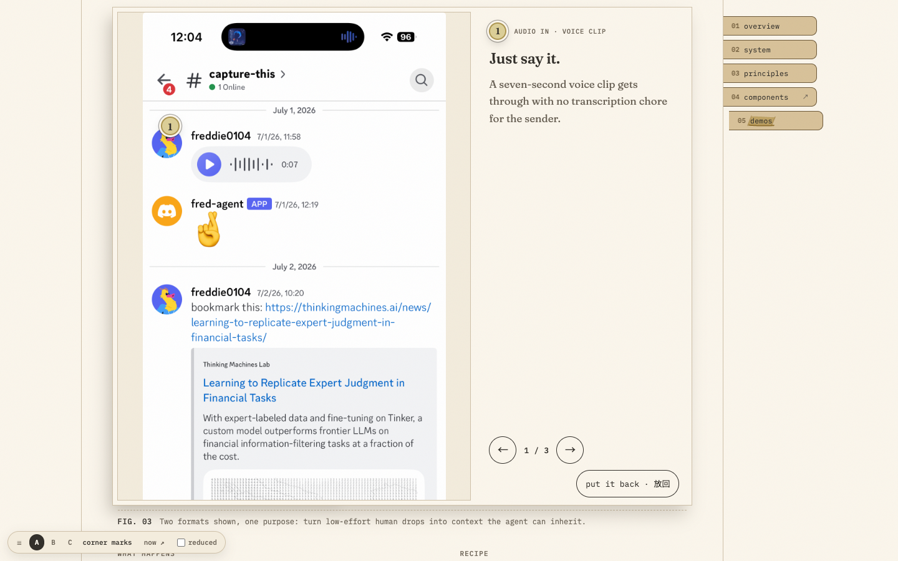
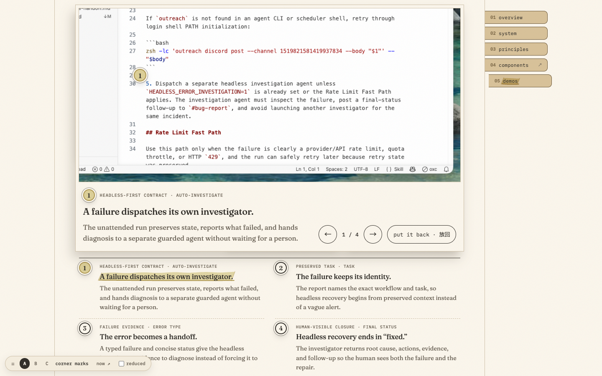
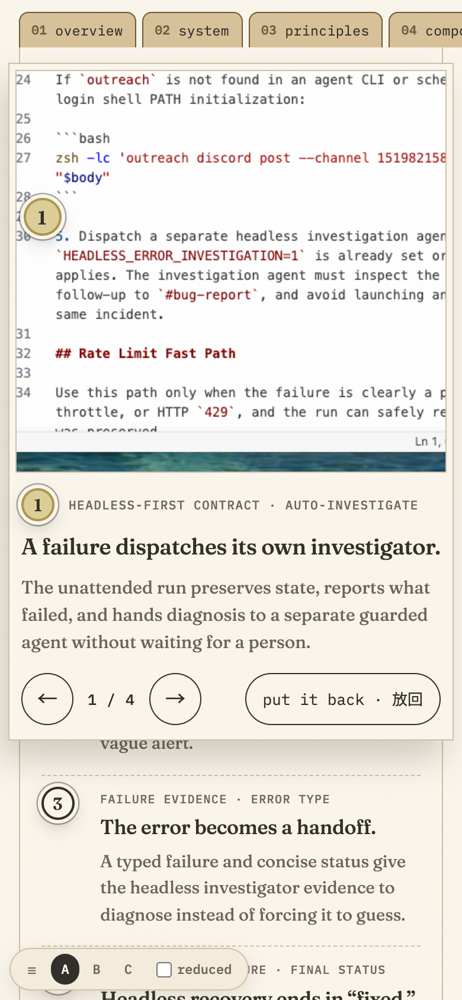
- The pair. At desktop widths the note gets its own column beside the window, 38 % of the enlargement (300–380 px), with its token and key, a 24 px title, 17 px text, and ← n / N → and "put it back · 放回" at its foot. When a capture has a region too wide to sit beside its note with its text at 11 px, the note becomes a band under the window instead (Fig. 04). On phones it's image over note. ← → step both together: the window pans to the next region while the note slides in from that side. The note area keeps the height of the capture's longest note, so the window's edges never move.
- No circle inside. The region's own token marks its corner in the window, in the wheat band.
- Zoom comes from the text, not from filling the window. Each capture carries its body text height (
data-text, in its own pixels). On a phone the zoom is the smallest at which that text renders at 11 CSS px, the smallest size Apple recommends. A region wider than the window pans, starting at its token. At desktop widths the text renders at about 13 px, or less when the region needs it to fit with its surroundings, and never under 10 px. The enlargement is always at least 1.35 × the print's own size, so it always enlarges.
| Capture (body text) | Phone, round 3 → 4 | Desktop, round 3 → 4 |
|---|---|---|
| Trash Patrol, Fig. 02 (15.5 px) | 0.85 → 0.71 (body 13 → 11 px) | 1.04–1.25 → 0.75–0.84 (16–19 → 11.5–13 px) |
| the skill file, Fig. 04 (14 px) | 0.85 → 0.79 (12 → 11 px) | 0.73 → 0.93 (10 → 13 px; the region is now step 5 alone, so it fits at size) |
| phone captures, Fig. 04 (44 px) | 0.30 → 0.25 (13 → 11 px) | 0.55 → 0.30 (24 → 13 px) |
| Discord intake, Fig. 03 (44 px) | 0.30 → 0.27 (13 → 12 px; 1.35 × its print) | 0.55 → 0.40 (24 → 18 px; 1.35 × its print, which already reads at 13 px) |
One data fix came with it: Fig. 04's region 1 was drawn across the file tree and the editor, and a third of it was the tree. It now covers step 5 alone, the text its note is about.
5 · Captions for Fred to approve
Fig. 02's caption changes with the pair; Fig. 04's still holds.
| Round 3 | Round 4 | |
|---|---|---|
| Fig. 02 | The numbers on the capture are the notes below it. Choose one to read it at size, in place; ← → step to the next, and Esc puts it back. | The numbers on the capture are the notes below it. Choose one to see that part closer, beside its note; ← → step through the rest, and Esc puts it back. |
| Fig. 04 | The numbers mark the auto-investigation rule and the task → error → fixed loop. Open one and ← → walk the loop in order; the second report shows the same recovery again. | Unchanged. |
6 · Keyboard, touch and motion
As in round 3: the legend entries are the controls, and opening moves focus into the enlargement. ← → step, ↑ ↓ pan the window, and Esc, "put it back" or a click outside closes it, with focus returning to the entry. A swipe steps, except inside a window that can still pan that way. Every control is 44 px. The enlargement grows out of the region's own place on a spring with one small overshoot, and it moves only transform and opacity. The pen's corners draw on the hand's clock, as its focus 「 」 do. Under reduced motion everything lands at once.
For the port
data-text(each capture's body text height) joins its width and height in the evidence data. The zoom tier is fetched only when an enlargement opens, as in round 3.- The corners, the outline and the stroke live in
r4-demos-hl.js. The corners are built the waypen-tier.jsbuilds FocusMark: the same corner strokes with the same slight jitter, drawn and lifted on the pen's easing. The port can build them from FocusMark itself, with a region-sized arm and four corners.
Known gaps
- Fig. 03 at desktop widths still covers its own legend while open; its note is in the column beside the window.
- On a phone the enlargement lies over the notes after the capture, as in round 3. They're inert until it's put back.
- Trash Patrol's region 2 (Discord's sidebar and messages) is wider than a phone's window at 11 px, so it opens at its token and pans.
Questions for Fred (Q3, round 4): (1) Does the tuned B hold up for you on the white and the dark captures? (2) Which mark should point at a region: A, the four corners (recommended), B, the outline, or C, the smooth stroke? (3) Is the zoom right now: 11 px text on phones, about 13 px at desktop widths, the note beside the image, or under it for Fig. 04? (4) Does Fig. 02's new caption stand?